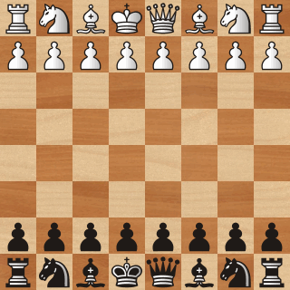

I am passionate about gaming and have spent a considerable amount of time playing all kinds of games. I have spent many hours playing computer games like Rust and Minecraft and even more time playing board games like chess and poker. My favorite game of all time is chess and it is the only game that I still play consistently.
I discovered competitive chess my freshman year in college when a couple dormates began playing chess in the hallways. I really enjoyed the geometry and strategy of the game and began playing regularly. I setup an online account on chess.com and started playing 10 minute games. I settled at an initial rating of 600 which corresponded to the bottom 5th percentile of players on the site but set a long term goal to reach a 99th percentile rating of 2000. I achieved my goal after two years and reached my peak rating of 2200 a year out of university. At this point I was getting paired with USCF National Masters and FIDE Masters regulary and was holding my own against many of them in online games. here to go to my chess.com profile. Add me as a friend if you would like to play some games.
Below is a game I played against National Master "finec2" on chess.com. I am playing with the black pieces. White resigned after 15. Nxd1+. ( Game Source )
